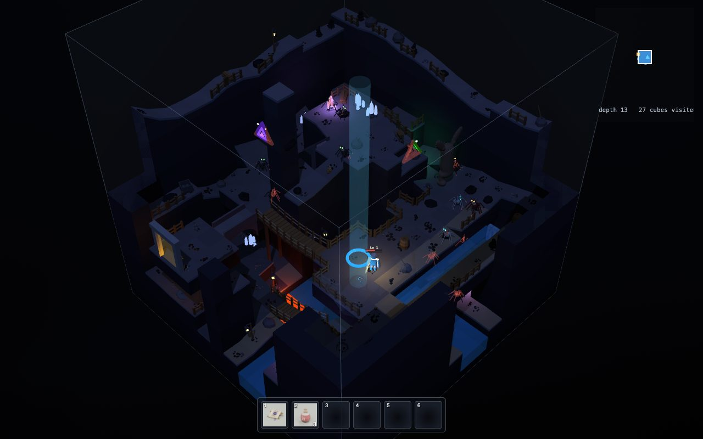
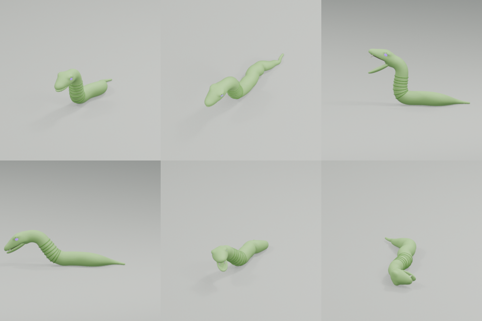
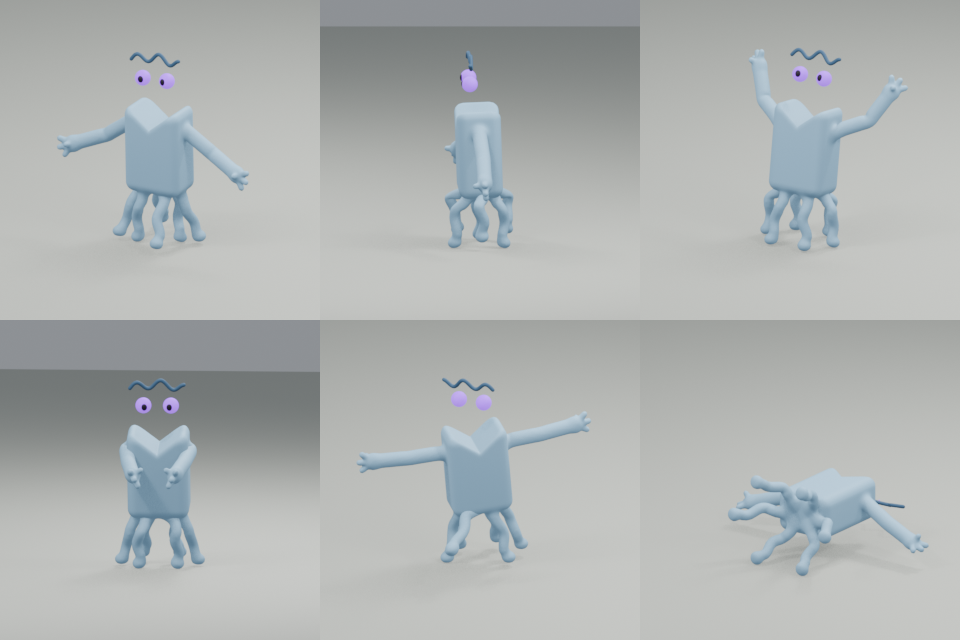
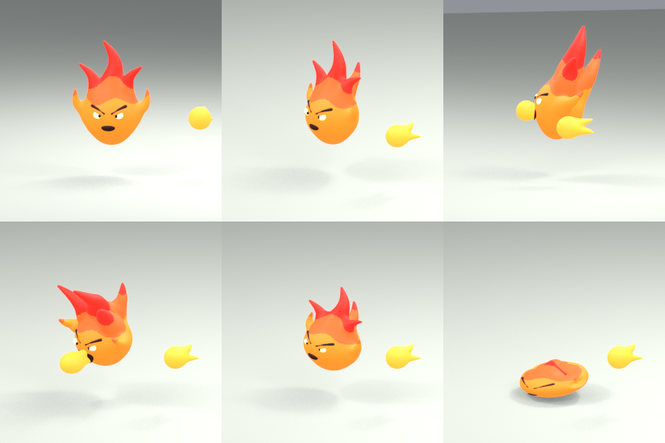
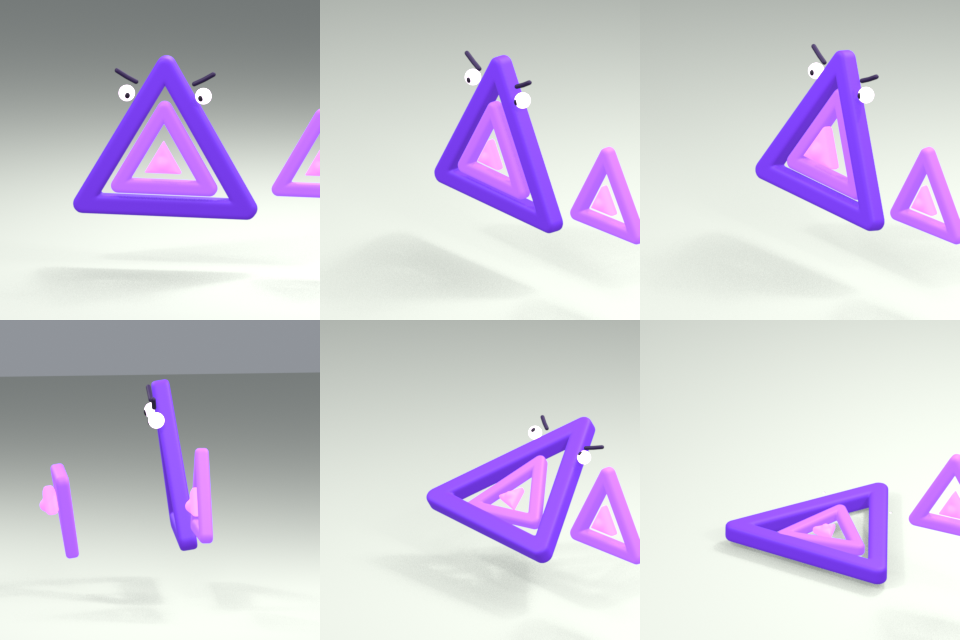
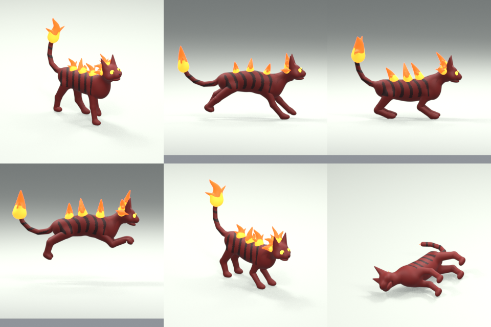

A monster is a list of numbers
Ein Monster ist eine Liste von Zahlen
To the game, a spider is not scary at all. It is a short list of numbers, called a profile:
Für das Spiel ist eine Spinne überhaupt nicht gruselig. Sie ist eine kurze Liste von Zahlen, ein sogenanntes Profil:
| healthGesundheit | 32 | two hits with the Old Swordzwei Treffer mit dem Alten Schwert |
| bite damageBissschaden | 15 | you have 100 health at the startdu hast am Anfang 100 Gesundheit |
| notices you withinbemerkt dich innerhalb | 3 cellsZellen | "aggro" range"Aggro"-Reichweite |
| gives up beyondgibt auf ab | 6 cellsZellen | |
| chase speedJagdtempo | 2.6 cells/sZellen/s | you run at 2.8!du rennst mit 2,8! |
| wander speedWandertempo | 0.6 cells/sZellen/s | |
| bite reachBissreichweite | 0.85 cellsZellen | |
| wind-up before the biteAusholen vor dem Biss | 0.42 ss | your chance to step awaydeine Chance auszuweichen |
| rest after a bitePause nach einem Biss | 1.2 ss | "cooldown""Abklingzeit" |
All monsters share the same brain. Only their numbers (and models) are different.
Alle Monster teilen sich dasselbe Gehirn. Nur ihre Zahlen (und Modelle) sind verschieden.

Try it: a spider's brain
Probier es: das Gehirn einer Spinne
Drag the hero (the white dot) around. Get close to the spider, but stay behind the wall: it can't see you! Then step out. When it's winding up (red), step away quickly. The dashed circle is how far it can see. Escape further than 6 cells, and it gives up.
Zieh den Helden (den weißen Punkt) herum. Geh nah an die Spinne heran, aber bleib hinter der Wand: Sie kann dich nicht sehen! Dann tritt hervor. Wenn sie ausholt (rot), geh schnell weg. Der gestrichelte Kreis zeigt, wie weit sie sehen kann. Flieh weiter als 6 Zellen, und sie gibt auf. (Die Zustände heißen im Code idle, walk, chase, attack und home.)
One mood at a time: a state machine
Immer nur eine Laune: ein Zustandsautomat
The spider's brain is always in exactly one state, like a mood. Each state has its own job, and its own rules for when to switch to another one. This is called a state machine.
Das Gehirn der Spinne ist immer in genau einem Zustand, wie in einer Laune. Jeder Zustand hat seine eigene Aufgabe und eigene Regeln, wann er in einen anderen wechselt. Das nennt man Zustandsautomat.
| STATE | ZUSTAND | DOES | MACHT | SWITCHES WHEN | WECHSELT, WENN |
|---|---|---|---|---|---|
| idle | idle (ruhen) | rests, looks at you if close | ruht, schaut dich an, wenn du nah bist | timer runs out → walk | Zeit ist um → walk |
| walk | walk (wandern) | wanders near home | läuft nahe dem Zuhause herum | arrived → idle | angekommen → idle |
| chase | chase (jagen) | follows its path to you | folgt seinem Weg zu dir | close and ready → attack lost you → home | nah und bereit → attack dich verloren → home |
| attack | attack (angreifen) | winds up, bites, finishes | holt aus, beißt, macht fertig | done → chase | fertig → chase |
| home | home (heimgehen) | walks back home | läuft nach Hause | arrived → idle | angekommen → idle |
From idle or walk, seeing you switches to chase. A hit that staggers it switches to chase too.
Aus idle oder walk wechselt sie zu chase, wenn sie dich sieht. Ein Treffer, der sie taumeln lässt, wechselt auch zu chase.
Why is this a good idea?
Warum ist das eine gute Idee?
Each state is small and easy to understand. To add a new behaviour (say, "flee when hurt"), you add one state and a few switches. You don't have to rethink everything.
Jeder Zustand ist klein und leicht zu verstehen. Für ein neues Verhalten (zum Beispiel "fliehen, wenn verletzt") fügst du einen Zustand und ein paar Wechsel hinzu. Du musst nicht alles neu durchdenken.
Guardians use one more state, defend: they stay near their post and only charge when you come close to their gate.
Wächter benutzen noch einen Zustand, defend (verteidigen): Sie bleiben nahe ihrem Posten und stürmen nur los, wenn du ihrem Tor zu nahe kommst.
Most game characters, from Pac-Man's ghosts to big game bosses, use a state machine somewhere inside.
Die meisten Spielfiguren, von den Geistern in Pac-Man bis zu großen Spiel-Bossen, haben irgendwo innen einen Zustandsautomaten.
Thinking slowly on purpose
Absichtlich langsam denken
Thinking five times a second. Monsters move every frame, but they only decide every 0.2 seconds. Searching for paths is work, and with 20 spiders in a room, it adds up. It also looks more natural: real animals don't react instantly either.
Fünfmal pro Sekunde denken. Monster bewegen sich in jedem Bild, aber sie entscheiden nur alle 0,2 Sekunden. Wege suchen ist Arbeit, und mit 20 Spinnen in einem Raum summiert sich das. Es sieht auch natürlicher aus: Echte Tiere reagieren auch nicht sofort.
Wind-ups you can see. Every attack starts with a wind-up animation. This is called a telegraph: the monster tells you what it's about to do. Once it starts, it is committed and can't change its mind. That's your chance to dodge!
Ausholen, das man sieht. Jeder Angriff beginnt mit einer Ausholbewegung. Das nennt man eine Ankündigung (englisch: telegraph): Das Monster verrät dir, was es gleich tun wird. Sobald es anfängt, ist es festgelegt und kann es sich nicht anders überlegen. Das ist deine Chance auszuweichen!
Aiming stops early. A Fire-face turns to aim at you, but stops turning before it spits. So stepping sideways at the right moment makes it miss.
Das Zielen hört früh auf. Ein Fire-face dreht sich, um auf dich zu zielen, hört aber auf zu drehen, bevor es spuckt. Ein Schritt zur Seite im richtigen Moment lässt es also danebenschießen.
A moment of peace. When you enter a cube, monsters may chase you, but they don't attack for 1.2 seconds (or until you hit one). No getting bitten the moment you arrive.
Ein Moment Ruhe. Wenn du einen Würfel betrittst, dürfen Monster dich jagen, greifen aber 1,2 Sekunden lang nicht an (oder bis du eins triffst). Kein Biss in der Sekunde, in der du ankommst.
No contact damage. Just bumping into a monster never hurts. Only real attacks do.
Kein Berührungsschaden. Einfach gegen ein Monster zu laufen tut nie weh. Nur echte Angriffe.
Meet the monsters
Lerne die Monster kennen
Seven species live in the depths. They are all made in Blender by code. How they're made
Sieben Arten leben in den Tiefen. Alle werden in Blender von Code gebaut. Wie sie gemacht werden





And...
Und...
Spiders, which come in big packs, and the Stunder, a huge, slow beast that rams you with its head and always knocks you over.
Spinnen, die in großen Rudeln kommen, und den Stunder, ein riesiges, langsames Biest, das dich mit dem Kopf rammt und immer umwirft.
Species, kinds and levels
Arten, Sorten und Stufen
A kind is a species with new colours and stronger numbers. No new model is needed! A Blood viper is a snake that is red, with:
Eine Sorte (kind) ist eine Art mit neuen Farben und stärkeren Zahlen. Kein neues Modell nötig! Eine Blood viper (Blutviper) ist eine Schlange, die rot ist, mit:
| health | Gesundheit | ×1.4 | ×1,4 |
| damage | Schaden | ×1.4 | ×1,4 |
| speed | Tempo | ×1.2 | ×1,2 |
| size | Größe | ×1.1 | ×1,1 |
The snakes get stronger the deeper you go: Grass snake (green), Sand viper (ochre), Blood viper (red), Shadow mamba (almost black). Ice levels have Frost adders, the swamp has Venom adders.
Die Schlangen werden stärker, je tiefer du kommst: Grass snake (grün), Sand viper (ocker), Blood viper (rot), Shadow mamba (fast schwarz). In den Eisgebieten gibt es Frost adders, im Sumpf Venom adders.
Preview them all: tools/kinds.html (with the game's server running).
Schau sie dir alle an: tools/kinds.html (mit laufendem Spielserver).
Levels
Stufen
A monster's level is about the depth it lives at: level 1 near the top, level 20 at the core. Every level adds:
Die Stufe eines Monsters ist ungefähr die Tiefe, in der es lebt: Stufe 1 oben, Stufe 20 am Kern. Jede Stufe gibt:
- +17% health
- +17% Gesundheit
- +10% damage
- +10% Schaden
- +25% experience and coins
- +25% Erfahrung und Münzen
...of its level 1 numbers. So a level 11 spider has 32 × (1 + 0.17 × 10) = 86 health.
...gemessen an seinen Zahlen auf Stufe 1. Eine Spinne auf Stufe 11 hat also 32 × (1 + 0,17 × 10) = 86 Gesundheit.
Monster levels never follow your level. Going back up to easy depths is safe, but gives little experience.
Monsterstufen richten sich nie nach deiner Stufe. Zurück in leichte Tiefen zu gehen ist sicher, bringt aber wenig Erfahrung.
Guardians and balance
Wächter und Balance
Guardians
Wächter
Every well down is guarded by a descent guardian (gold), and one or two gates on the way by side guardians (pink). They are normal species, promoted: much more health, harder hits, and lots of poise.
Jeder Brunnen nach unten wird von einem Brunnenwächter (gold) bewacht, und ein oder zwei Tore unterwegs von Torwächtern (pink). Es sind normale Arten, befördert: viel mehr Gesundheit, härtere Treffer und viel Standfestigkeit.
Their gate stays sealed with a red cross until the guardian dies. Killing the others is not enough. Their arena has twice the usual monsters, and they defend together.
Ihr Tor bleibt mit einem roten Kreuz versiegelt, bis der Wächter tot ist. Die anderen zu besiegen reicht nicht. In ihrer Arena gibt es doppelt so viele Monster wie sonst, und sie verteidigen gemeinsam.
Guardians always drop good loot.
Wächter lassen immer gute Beute fallen.
Fair and fun: balance
Fair und spaßig: Balance
The game is tuned so you stay about two levels above the depth you're at, and fights feel the same all the way down: a spider always takes about 1 hit, a Stunder 3 to 5.
Das Spiel ist so eingestellt, dass du etwa zwei Stufen über der Tiefe bleibst, in der du bist, und Kämpfe sich bis ganz unten gleich anfühlen: Eine Spinne braucht immer etwa 1 Treffer, ein Stunder 3 bis 5.
How do the makers know? A tool plays the game in fast-forward, using the real tables, and prints where a player would be at each depth:
Woher wissen die Macher das? Ein Werkzeug spielt das Spiel im Schnelldurchlauf, mit den echten Tabellen, und druckt aus, wo ein Spieler in jeder Tiefe stehen würde:
node tools/balance.mjsDetails for grown-ups: docs/balance.md
Details für Erwachsene: docs/balance.md
The real code: deciding
Der echte Code: entscheiden
To start chasing, all of these must be true: you're alive, close (aggro), at about the same height (within 1), visible (clearLine from its eyes to your chest), and there's a path of at most 10 steps.
Um mit dem Jagen anzufangen, muss alles davon stimmen: Du lebst, bist nah (aggro), auf etwa derselben Höhe (höchstens 1 Unterschied), sichtbar (clearLine von ihren Augen zu deiner Brust), und es gibt einen Weg mit höchstens 10 Schritten.
While chasing, it plans a new path every think. e.lost counts up while it has no path or you're too far. After 1.4 seconds of that, it goes home.
Beim Jagen plant sie bei jedem Nachdenken einen neuen Weg. e.lost zählt hoch, solange sie keinen Weg hat oder du zu weit weg bist. Nach 1,4 Sekunden davon geht sie nach Hause.
e.think is a countdown. When it reaches zero, think, and start again at 0.2. That's how "five times a second" works.
e.think ist ein Countdown. Wenn er null erreicht: nachdenken und wieder bei 0,2 anfangen. So funktioniert "fünfmal pro Sekunde".
The demo uses the same rules on a little grid.
Die Demo benutzt dieselben Regeln auf einem kleinen Gitter.
The real code: making a kind
Der echte Code: eine Sorte machen
enemyKind(SNAKE, {...}) copies the snake's profile and changes it:
enemyKind(SNAKE, {...}) kopiert das Profil der Schlange und ändert es:
label: its name.reason: what the game says if it kills you.label: ihr Name.reason: was das Spiel sagt, wenn sie dich erwischt.colors: new colours for its skin and eyes.oklchis a way to write colours by lightness, colourfulness and hue. Recolouringcolors: neue Farben für Haut und Augen.oklchist eine Art, Farben nach Helligkeit, Buntheit und Farbton aufzuschreiben. Umfärbenichor: the colours of its blood droplets when hit.ichor: die Farben ihrer Blutströpfchen, wenn sie getroffen wird.mods: multipliers for its numbers.mods: Multiplikatoren für ihre Zahlen.
Then it's added to the list ENEMY_KINDS and to the rosters of the depths where it should live. That's it: a new monster in 10 lines!
Dann kommt sie in die Liste ENEMY_KINDS und in die Besetzungslisten der Tiefen, in denen sie leben soll. Fertig: ein neues Monster in 10 Zeilen!